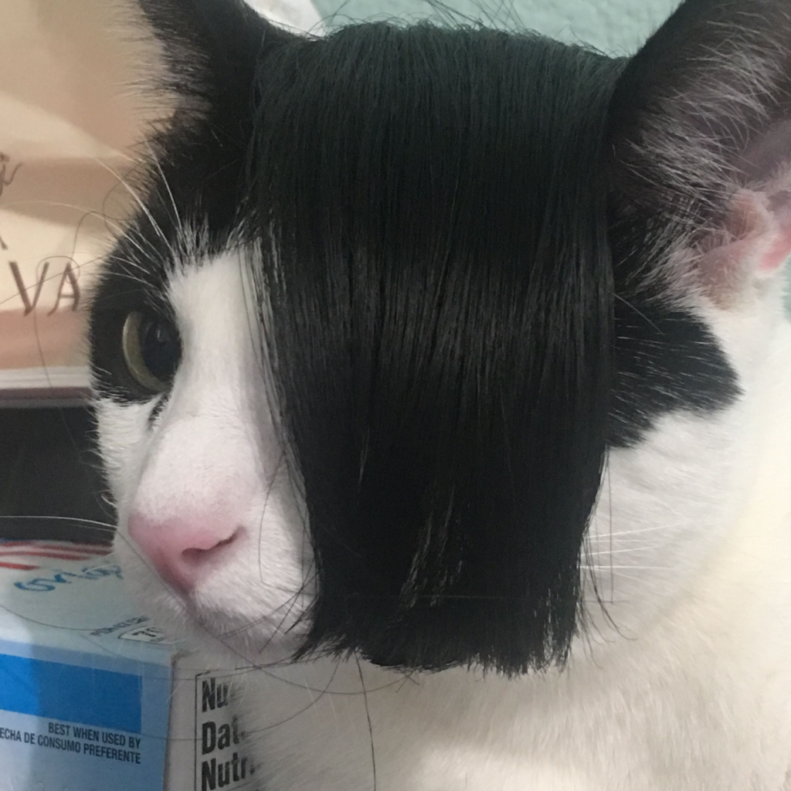
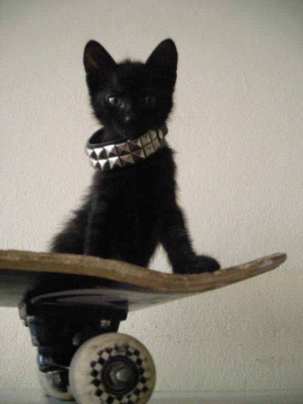
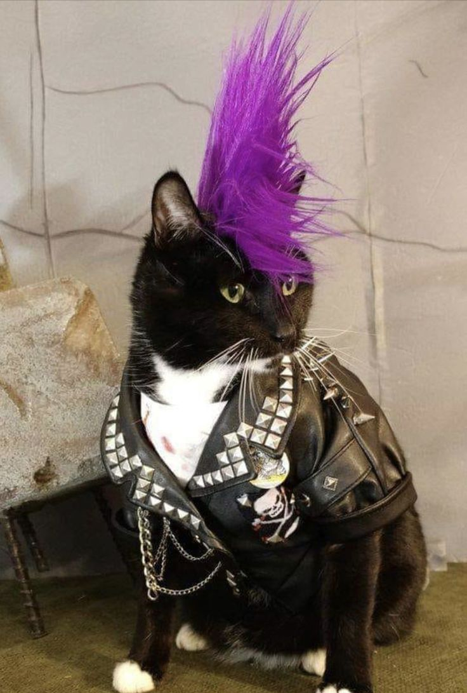
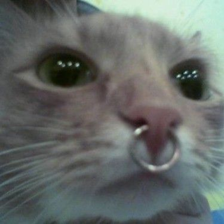

"Meet the Emo Cats, the only feline friends who wear their hearts on their fur and express every emotion like it's the end of the world. These moody, dramatic kitties are experts in side-eye, pouting, and staring out of windows longingly. Whether they're sulking over spilled milk or lamenting the lack of tuna, their over-the-top reactions will have you laughing out loud. Perfect for anyone who thinks life is a little too cheerful and needs a good dose of feline angst. Because why be happy when you can be emo? Click here for free cat pictures!!!




Emo Cats
5 Types of Emo Cats:
Gothic Emo Cat
Dark fur, often black or deep grey, with striking pale eyes. Wears a tiny spiked collar and has a moody, introspective demeanor.
Punk Emo Cat
Fur styled into tiny spikes or a fauxhawk, often with bold colors like blue or green. Wears a studded collar and has a rebellious attitude.
Sad Boy Emo Cat
Soft, droopy fur, usually in muted tones like grey or white. Has large, expressive eyes that seem perpetually melancholic. Wears a simple chain or band around its neck.
Skater Emo Cat:
Sleek fur with streaks of bright colors like red or purple. Often seen with a tiny bandana around its neck and a laid-back, cool attitude.
Indie Kitty
An Indie Emo Cat with quirky fur and a thoughtful demeanor, often found lounging next to a stack of vinyls or a vintage typewriter.